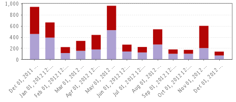

| Client Final Status Count by Day,Week,Month,Qtr,Yr 2 Server Groups | Dec 13, 2011 12:00:00AM - Dec 11, 2012 08:30:59AM | |
| Client final status count group by: Month based on a cutoff time of: 8am | |
| Client Final Status Count by Day,Week,Month,Qtr,Yr | ||||||
|  | ||||||
|